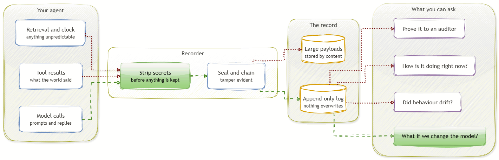

An event-sourced flight recorder and counterfactual wind tunnel for AI agents.
It records what an agent did in production, then re-runs those same cases against a different model, prompt, or policy. You find out what would have happened before you change anything in production.
It is infrastructure, not an agent. You install an SDK next to whatever you already run, in Python or through an MCP proxy for anything out of process, and it works the same whether your agent does document extraction, support triage, or prior authorisation.
The agent below is a demonstration, not the project. It is an on-call triage agent that reads alerts and decides whether to escalate or keep monitoring, and it stands in for whatever you happen to run. It is on opus-5. Someone wants to upgrade, someone wants to cut cost, someone wants to cut cost harder. Each proposal was re-run against the same 120 recorded incidents.
Three proposals, three different answers. The upgrade is worth buying. The cheaper model is genuinely equivalent, so that saving can be taken without arguing about it. The cheapest model would have made the agent measurably worse at deciding when to wake someone up.
The middle result is the one that is hardest to get any other way. "No detectable difference" on a model costing a fraction as much is real money, but only if the comparison was paired against the same incidents and corrected for testing three things at once. Reading twenty outputs side by side cannot tell you that.
One incident from the same sweep. The agent's state is rebuilt from the recording up to a chosen point, then the upgraded model takes over from there. This is the mechanism underneath every sweep, whatever the agent does.
Everything before the switch is identical, so the model is the only thing that can explain the difference. You are not writing a new test, you are running a real incident again with one variable moved.
Captured output, played back at the speed it actually took.
Recording on the left, the questions you can ask on the right.
